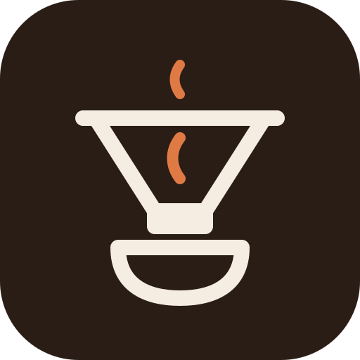

<!DOCTYPE html>
<html lang="nb">
<head>
<meta charset="utf-8">
<meta name="viewport" content="width=device-width, initial-scale=1, viewport-fit=cover">
<meta name="theme-color" content="#F5F0E8" media="(prefers-color-scheme: light)">
<meta name="theme-color" content="#17110D" media="(prefers-color-scheme: dark)">
<meta name="apple-mobile-web-app-capable" content="yes">
<meta name="apple-mobile-web-app-status-bar-style" content="default">
<meta name="mobile-web-app-capable" content="yes">
<meta name="apple-mobile-web-app-title" content="Bryggeboka">
<meta name="application-name" content="Bryggeboka">
<meta name="description" content="Bryggeapp for kaffe bygget på oppskriftene og rådene til Tim Wendelboe.">
<title>Bryggeboka</title>
<link rel="manifest" href="manifest.webmanifest">
<link rel="icon" type="image/svg+xml" href="icons/logo.svg">
<link rel="apple-touch-icon" href="icons/apple-touch-icon.png">
<style>
:root{
  --bg:#F5F0E8; --surface:#FFFDF9; --surface2:#EFE7DB; --ink:#2A1D16; --muted:#76665A;
  --line:#E2D7C8; --accent:#B5562B; --accent-soft:#F3DDD0; --on-accent:#FFFFFF;
  --good:#3F7D58; --good-soft:#DCEBE0; --warn:#A8741F; --warn-soft:#F4E6CB; --bad:#B03A2E; --bad-soft:#F5D9D5;
  --shadow:0 1px 2px rgba(42,29,22,.06),0 6px 20px rgba(42,29,22,.06);
  --serif:ui-serif,"Iowan Old Style","Palatino Linotype",Palatino,Georgia,serif;
  --sans:-apple-system,BlinkMacSystemFont,"Segoe UI",Roboto,"Helvetica Neue",system-ui,sans-serif;
  color-scheme:light;
}
@media (prefers-color-scheme: dark){
  :root:not([data-theme="light"]){
    --bg:#17110D; --surface:#211913; --surface2:#2B211A; --ink:#F2E9DE; --muted:#A8978A;
    --line:#3A2E25; --accent:#E07A45; --accent-soft:#3C2519; --on-accent:#1A120D;
    --good:#7CC096; --good-soft:#1F3127; --warn:#E0B062; --warn-soft:#3A2D16; --bad:#F08A7C; --bad-soft:#3D1F1B;
    --shadow:0 1px 2px rgba(0,0,0,.3),0 6px 20px rgba(0,0,0,.25);
    color-scheme:dark;
  }
}
:root[data-theme="dark"]{
  --bg:#17110D; --surface:#211913; --surface2:#2B211A; --ink:#F2E9DE; --muted:#A8978A;
  --line:#3A2E25; --accent:#E07A45; --accent-soft:#3C2519; --on-accent:#1A120D;
  --good:#7CC096; --good-soft:#1F3127; --warn:#E0B062; --warn-soft:#3A2D16; --bad:#F08A7C; --bad-soft:#3D1F1B;
  --shadow:0 1px 2px rgba(0,0,0,.3),0 6px 20px rgba(0,0,0,.25);
  color-scheme:dark;
}
*{box-sizing:border-box;margin:0;padding:0;-webkit-tap-highlight-color:transparent}
html{-webkit-text-size-adjust:100%}
body{background:var(--bg);color:var(--ink);font-family:var(--sans);font-size:16px;line-height:1.5;min-height:100vh}
button,input,select,textarea{font:inherit;color:inherit}
button{cursor:pointer;background:none;border:none;touch-action:manipulation}
a{color:var(--accent)}
h1,h2,h3{font-family:var(--serif);font-weight:600;line-height:1.2;letter-spacing:-.01em}
h1{font-size:clamp(26px,6vw,34px)}
h2{font-size:22px}
h3{font-size:18px}
.muted{color:var(--muted)}
.small{font-size:14px}
.tiny{font-size:12.5px}
.num{font-variant-numeric:tabular-nums}

#app{max-width:760px;margin:0 auto;padding:max(16px,env(safe-area-inset-top)) 16px calc(96px + env(safe-area-inset-bottom))}
.topbar{display:flex;align-items:center;gap:12px;margin:4px 0 18px}
.topbar .grow{flex:1;min-width:0}
.back{width:42px;height:42px;border-radius:12px;display:grid;place-items:center;background:var(--surface);border:1px solid var(--line);flex:none}
.back svg{width:20px;height:20px}
.kicker{font-size:12.5px;text-transform:uppercase;letter-spacing:.08em;color:var(--muted);font-weight:600}

.card{background:var(--surface);border:1px solid var(--line);border-radius:18px;padding:16px;box-shadow:var(--shadow)}
.stack>*+*{margin-top:12px}
.section{margin-top:26px}
.section>h2,.section>h3{margin-bottom:10px}

/* metodegrid */
.grid{display:grid;grid-template-columns:repeat(2,minmax(0,1fr));gap:12px}
@media (min-width:620px){.grid{grid-template-columns:repeat(3,minmax(0,1fr))}}
.method{display:flex;flex-direction:column;align-items:flex-start;gap:10px;text-align:left;padding:16px;min-height:150px;
  background:var(--surface);border:1px solid var(--line);border-radius:18px;box-shadow:var(--shadow);transition:transform .12s}
.method:active{transform:scale(.97)}
.method .ic{width:44px;height:44px;border-radius:12px;background:var(--accent-soft);color:var(--accent);display:grid;place-items:center}
.method .ic svg{width:28px;height:28px}
.method b{font-family:var(--serif);font-size:18px;font-weight:600;line-height:1.15}
.method span{font-size:13px;color:var(--muted);line-height:1.35}

.hero{display:flex;gap:14px;align-items:center;margin-bottom:6px}
.hero .logo{width:52px;height:52px;border-radius:14px;flex:none}
.quote{border-left:3px solid var(--accent);padding:4px 0 4px 14px;font-family:var(--serif);font-size:17px;font-style:italic}

/* knapper */
.btn{display:inline-flex;align-items:center;justify-content:center;gap:8px;min-height:48px;padding:0 20px;border-radius:14px;
  font-weight:600;background:var(--surface2);border:1px solid var(--line)}
.btn.primary{background:var(--accent);color:var(--on-accent);border-color:transparent}
.btn.block{width:100%}
.btn.sm{min-height:36px;padding:0 12px;font-size:14px;border-radius:10px}
.btn:active{transform:scale(.98)}
.btn svg{width:20px;height:20px}
.row{display:flex;gap:10px;align-items:center;flex-wrap:wrap}
.row.nowrap{flex-wrap:nowrap}
.spread{display:flex;justify-content:space-between;align-items:center;gap:10px}

/* chips */
.chips{display:flex;flex-wrap:wrap;gap:8px}
.chip{min-height:38px;padding:0 14px;border-radius:999px;border:1px solid var(--line);background:var(--surface);font-size:14px;font-weight:500}
.chip[aria-pressed="true"]{background:var(--ink);color:var(--bg);border-color:var(--ink)}

/* parametre */
.params{display:grid;grid-template-columns:repeat(2,minmax(0,1fr));gap:10px}
@media (min-width:620px){.params{grid-template-columns:repeat(4,minmax(0,1fr))}}
.param{background:var(--surface2);border-radius:14px;padding:12px}
.param .k{font-size:12px;text-transform:uppercase;letter-spacing:.06em;color:var(--muted);font-weight:600}
.param .v{font-size:15px;font-weight:600;margin-top:2px;line-height:1.3}
.big{font-family:var(--serif);font-size:34px;font-weight:600;line-height:1}
.big small{font-size:16px;font-family:var(--sans);color:var(--muted);font-weight:500;margin-left:2px}
.stepper{display:flex;align-items:center;gap:8px}
.stepper button{width:44px;height:44px;border-radius:12px;background:var(--surface2);border:1px solid var(--line);font-size:22px;font-weight:600;line-height:1}
.stepper .val{min-width:92px;text-align:center}
.calc{display:grid;grid-template-columns:1fr 1fr;gap:12px;align-items:end}
@media (max-width:420px){.calc{grid-template-columns:1fr}}
input[type=range]{width:100%;accent-color:var(--accent);height:32px}
label.f{display:block;font-size:13px;font-weight:600;color:var(--muted);margin-bottom:4px}
input.t,select.t,textarea.t{width:100%;min-height:46px;padding:10px 12px;border-radius:12px;border:1px solid var(--line);background:var(--surface);}
textarea.t{min-height:84px;resize:vertical}
input.t:focus,select.t:focus,textarea.t:focus{outline:2px solid var(--accent);outline-offset:1px}

/* lister */
ol.steps{list-style:none;counter-reset:s}
ol.steps li{counter-increment:s;position:relative;padding:10px 0 10px 44px;border-bottom:1px solid var(--line)}
ol.steps li:last-child{border-bottom:none}
ol.steps li::before{content:counter(s);position:absolute;left:0;top:10px;width:30px;height:30px;border-radius:50%;
  background:var(--surface2);display:grid;place-items:center;font-weight:700;font-size:14px}
ol.steps .when{font-size:13px;font-weight:700;color:var(--accent);font-variant-numeric:tabular-nums}
ul.tips{list-style:none}
ul.tips li{position:relative;padding:8px 0 8px 26px;border-bottom:1px solid var(--line)}
ul.tips li:last-child{border-bottom:none}
ul.tips li::before{content:"";position:absolute;left:4px;top:16px;width:8px;height:8px;border-radius:50%;background:var(--accent)}
.note{background:var(--warn-soft);color:var(--ink);border-radius:14px;padding:12px 14px;font-size:14px}
.note.good{background:var(--good-soft)}
.src{font-size:13px;color:var(--muted)}
.src a{color:var(--muted)}

/* timer */
.timerwrap{text-align:center;padding:8px 0 4px}
.clock{font-family:var(--serif);font-size:clamp(64px,22vw,112px);font-weight:600;line-height:1;font-variant-numeric:tabular-nums;letter-spacing:-.02em}
.prog{height:8px;border-radius:99px;background:var(--surface2);overflow:hidden;margin:16px 0 4px}
.prog i{display:block;height:100%;background:var(--accent);width:0;transition:width .25s linear}
.now{background:var(--accent);color:var(--on-accent);border-radius:20px;padding:18px;text-align:left;margin-top:14px}
.now .lbl{font-size:12.5px;text-transform:uppercase;letter-spacing:.08em;opacity:.85;font-weight:700}
.now h2{font-size:26px;margin:4px 0 6px}
.now .target{font-family:var(--serif);font-size:44px;font-weight:600;line-height:1;margin-top:10px}
.now .target small{font-size:15px;font-family:var(--sans);opacity:.85;margin-left:4px;font-weight:600}
.next{display:flex;justify-content:space-between;gap:10px;margin-top:10px;padding:12px 14px;border-radius:14px;background:var(--surface);border:1px solid var(--line);font-size:15px;text-align:left}
.tl{list-style:none;margin-top:16px}
.tl li{display:flex;gap:12px;padding:9px 4px;border-bottom:1px solid var(--line);font-size:15px;opacity:.6}
.tl li.done{opacity:.4;text-decoration:line-through}
.tl li.cur{opacity:1;font-weight:700}
.tl li .t{width:48px;flex:none;font-variant-numeric:tabular-nums;color:var(--muted)}
.controls{display:grid;grid-template-columns:1fr 2fr 1fr;gap:10px;margin-top:16px}

/* dagbok */
.entry{display:flex;gap:12px;align-items:flex-start}
.entry .ic{width:40px;height:40px;border-radius:12px;background:var(--accent-soft);color:var(--accent);display:grid;place-items:center;flex:none}
.entry .ic svg{width:24px;height:24px}
.stars{display:flex;gap:4px}
.stars button{width:40px;height:40px;font-size:26px;color:var(--line);line-height:1}
.stars button.on{color:var(--accent)}
.tag{display:inline-block;font-size:12px;padding:2px 8px;border-radius:99px;background:var(--surface2);margin:2px 4px 0 0}
.empty{text-align:center;padding:30px 16px;color:var(--muted)}

/* lær */
.lesson{display:flex;gap:14px;align-items:center;text-align:left;width:100%;padding:14px 16px;background:var(--surface);border:1px solid var(--line);border-radius:16px}
.lesson .n{width:36px;height:36px;border-radius:10px;background:var(--surface2);display:grid;place-items:center;font-weight:700;flex:none}
.lesson .grow{flex:1;min-width:0}
.lesson b{display:block;font-weight:600}
.lesson span{font-size:13.5px;color:var(--muted)}
.chev{width:18px;height:18px;flex:none;color:var(--muted)}
.prose p{margin:0 0 12px}
.prose h3{margin:20px 0 8px}
.prose ul{margin:0 0 12px 20px}
.prose li{margin:4px 0}
.video{display:flex;gap:12px;align-items:center;padding:12px 14px;border:1px solid var(--line);border-radius:14px;background:var(--surface);text-decoration:none;color:var(--ink)}
.video .play{width:40px;height:40px;border-radius:50%;background:var(--accent);color:var(--on-accent);display:grid;place-items:center;flex:none}
.video .play svg{width:18px;height:18px}
.video span{font-size:13px;color:var(--muted);display:block}

/* smaksveileder */
.diag{display:grid;grid-template-columns:repeat(2,minmax(0,1fr));gap:10px}
.diag button{padding:14px;border-radius:14px;border:1px solid var(--line);background:var(--surface);text-align:left;font-weight:600;min-height:64px}
.diag button span{display:block;font-weight:400;font-size:13px;color:var(--muted)}
.diag button[aria-pressed="true"]{border-color:var(--accent);background:var(--accent-soft)}
.fresh{border-radius:16px;padding:16px;margin-top:12px}
.meter{position:relative;height:10px;border-radius:99px;margin:18px 0 8px;
  background:linear-gradient(90deg,var(--warn) 0 14%,var(--good) 14% 70%,var(--bad) 70% 100%)}
.meter i{position:absolute;top:-6px;width:4px;height:22px;border-radius:2px;background:var(--ink);transform:translateX(-50%)}
.scorerow{display:grid;grid-template-columns:110px 1fr 28px;gap:8px;align-items:center;font-size:14px}

/* bunnmeny */
nav.tabs{position:fixed;left:0;right:0;bottom:0;z-index:20;background:color-mix(in srgb,var(--bg) 88%,transparent);
  backdrop-filter:blur(12px);-webkit-backdrop-filter:blur(12px);border-top:1px solid var(--line);
  padding:6px 8px calc(6px + env(safe-area-inset-bottom))}
nav.tabs .in{max-width:760px;margin:0 auto;display:grid;grid-template-columns:repeat(4,1fr)}
nav.tabs a{display:flex;flex-direction:column;align-items:center;gap:2px;padding:6px 0;text-decoration:none;color:var(--muted);font-size:12px;font-weight:600;border-radius:12px}
nav.tabs a svg{width:24px;height:24px}
nav.tabs a.on{color:var(--accent)}
body.brewing nav.tabs{display:none}
body.brewing #app{padding-bottom:calc(24px + env(safe-area-inset-bottom))}

.toast{position:fixed;left:50%;bottom:calc(90px + env(safe-area-inset-bottom));transform:translateX(-50%);background:var(--ink);color:var(--bg);
  padding:10px 16px;border-radius:12px;font-size:14px;font-weight:600;z-index:50;opacity:0;transition:opacity .2s;pointer-events:none;max-width:calc(100% - 32px)}
.toast.on{opacity:1}
.sr{position:absolute;width:1px;height:1px;overflow:hidden;clip:rect(0 0 0 0)}
@media (prefers-reduced-motion:reduce){*{transition:none!important}}
</style>
</head>
<body>
<div id="app" aria-live="polite"></div>
<nav class="tabs" aria-label="Hovedmeny"><div class="in" id="tabs"></div></nav>
<div class="toast" id="toast" role="status"></div>

<script>
"use strict";
/* =========================================================
   Bryggeboka – kaffebrygging etter Tim Wendelboes metoder
   ========================================================= */

/* ---------- små hjelpere ---------- */
var $app = document.getElementById("app");
function esc(s){return String(s==null?"":s).replace(/[&<>"']/g,function(c){return {"&":"&amp;","<":"&lt;",">":"&gt;",'"':"&quot;","'":"&#39;"}[c];});}
function r(n){return Math.round(n);}
function r1(n){return Math.round(n*10)/10;}
function fmt1(n){return String(r1(n)).replace(".",",");}
function mmss(sec){sec=Math.max(0,Math.floor(sec));var m=Math.floor(sec/60),s=sec%60;return m+":"+(s<10?"0":"")+s;}
function store(k,v){try{if(v===undefined){var x=localStorage.getItem("bb:"+k);return x?JSON.parse(x):null;}localStorage.setItem("bb:"+k,JSON.stringify(v));}catch(e){return null;}}
function toast(msg){var t=document.getElementById("toast");t.textContent=msg;t.classList.add("on");clearTimeout(toast._t);toast._t=setTimeout(function(){t.classList.remove("on");},2200);}
function todayISO(){var d=new Date();d.setMinutes(d.getMinutes()-d.getTimezoneOffset());return d.toISOString().slice(0,10);}

/* ---------- ikoner ---------- */
var IC={
  pourover:'<svg viewBox="0 0 32 32" fill="none" stroke="currentColor" stroke-width="2" stroke-linecap="round" stroke-linejoin="round"><path d="M6 9h20l-7 10h-6z"/><path d="M4 9h24"/><path d="M13 19v2h6v-2"/><path d="M9 24h14c0 3-3 5-7 5s-7-2-7-5z"/></svg>',
  batch:'<svg viewBox="0 0 32 32" fill="none" stroke="currentColor" stroke-width="2" stroke-linecap="round" stroke-linejoin="round"><rect x="6" y="3" width="9" height="26" rx="2"/><path d="M15 6h11l-3 6h-8"/><path d="M17 17h8v8a3 3 0 0 1-3 3h-2a3 3 0 0 1-3-3z"/><path d="M4 29h24"/></svg>',
  press:'<svg viewBox="0 0 32 32" fill="none" stroke="currentColor" stroke-width="2" stroke-linecap="round" stroke-linejoin="round"><path d="M16 2v8"/><path d="M12 2h8"/><rect x="8" y="8" width="14" height="21" rx="2"/><path d="M8 13h14"/><path d="M22 12h3v12h-3"/><path d="M11 20h8" opacity=".5"/></svg>',
  aeropress:'<svg viewBox="0 0 32 32" fill="none" stroke="currentColor" stroke-width="2" stroke-linecap="round" stroke-linejoin="round"><rect x="11" y="2" width="10" height="5" rx="1"/><path d="M12 7v3"/><path d="M20 7v3"/><rect x="9" y="10" width="14" height="14" rx="1"/><path d="M7 24h18"/><path d="M10 27h12"/></svg>',
  strong:'<svg viewBox="0 0 32 32" fill="none" stroke="currentColor" stroke-width="2" stroke-linecap="round" stroke-linejoin="round"><rect x="9" y="6" width="14" height="16" rx="1"/><path d="M7 22h18"/><path d="M17 9l-4 6h5l-3 5"/><path d="M12 26h8l-1 3h-6z"/></svg>',
  iced:'<svg viewBox="0 0 32 32" fill="none" stroke="currentColor" stroke-width="2" stroke-linecap="round" stroke-linejoin="round"><path d="M7 6h18l-2 22H9z"/><rect x="11" y="12" width="5" height="5" rx="1" transform="rotate(-12 13.5 14.5)"/><rect x="16" y="17" width="5" height="5" rx="1" transform="rotate(10 18.5 19.5)"/><path d="M19 2l-3 9"/></svg>',
  espresso:'<svg viewBox="0 0 32 32" fill="none" stroke="currentColor" stroke-width="2" stroke-linecap="round" stroke-linejoin="round"><path d="M7 13h16v5a7 7 0 0 1-7 7h-2a7 7 0 0 1-7-7z"/><path d="M23 15h2a3 3 0 0 1 0 6h-3"/><path d="M5 28h22"/><path d="M12 4c-1 2 1 3 0 5"/><path d="M17 4c-1 2 1 3 0 5"/></svg>',
  cupping:'<svg viewBox="0 0 32 32" fill="none" stroke="currentColor" stroke-width="2" stroke-linecap="round" stroke-linejoin="round"><path d="M3 14h16c0 6-3 10-8 10s-8-4-8-10z"/><path d="M5 28h12"/><ellipse cx="25" cy="9" rx="3" ry="4"/><path d="M25 13v15"/></svg>',
  back:'<svg viewBox="0 0 24 24" fill="none" stroke="currentColor" stroke-width="2.2" stroke-linecap="round" stroke-linejoin="round"><path d="M15 5l-7 7 7 7"/></svg>',
  chev:'<svg class="chev" viewBox="0 0 24 24" fill="none" stroke="currentColor" stroke-width="2.2" stroke-linecap="round" stroke-linejoin="round"><path d="M9 5l7 7-7 7"/></svg>',
  play:'<svg viewBox="0 0 24 24" fill="currentColor"><path d="M8 5v14l11-7z"/></svg>',
  pause:'<svg viewBox="0 0 24 24" fill="currentColor"><path d="M7 5h4v14H7zM13 5h4v14h-4z"/></svg>',
  reset:'<svg viewBox="0 0 24 24" fill="none" stroke="currentColor" stroke-width="2.2" stroke-linecap="round" stroke-linejoin="round"><path d="M4 12a8 8 0 1 0 3-6.2"/><path d="M4 4v4h4"/></svg>',
  skip:'<svg viewBox="0 0 24 24" fill="none" stroke="currentColor" stroke-width="2.2" stroke-linecap="round" stroke-linejoin="round"><path d="M5 5l9 7-9 7z"/><path d="M18 5v14"/></svg>',
  tabBrew:'<svg viewBox="0 0 24 24" fill="none" stroke="currentColor" stroke-width="2" stroke-linecap="round" stroke-linejoin="round"><path d="M4 8h13v5a6 6 0 0 1-6 6h-1a6 6 0 0 1-6-6z"/><path d="M17 10h1.5a2.5 2.5 0 0 1 0 5H17"/><path d="M8 2.5c-.8 1.4.8 2.1 0 3.5M12 2.5c-.8 1.4.8 2.1 0 3.5"/></svg>',
  tabLearn:'<svg viewBox="0 0 24 24" fill="none" stroke="currentColor" stroke-width="2" stroke-linecap="round" stroke-linejoin="round"><path d="M3 5.5C5.5 4 8.5 4 12 6c3.5-2 6.5-2 9-.5V19c-2.5-1.5-5.5-1.5-9 .5-3.5-2-6.5-2-9-.5z"/><path d="M12 6v13.5"/></svg>',
  tabTools:'<svg viewBox="0 0 24 24" fill="none" stroke="currentColor" stroke-width="2" stroke-linecap="round" stroke-linejoin="round"><rect x="4" y="3" width="16" height="18" rx="2"/><path d="M8 7h8M8 12h2M14 12h2M8 16h2M14 16h2"/></svg>',
  tabLog:'<svg viewBox="0 0 24 24" fill="none" stroke="currentColor" stroke-width="2" stroke-linecap="round" stroke-linejoin="round"><path d="M6 3h11a2 2 0 0 1 2 2v16H7a2 2 0 0 1-2-2V4a1 1 0 0 1 1-1z"/><path d="M5 17a2 2 0 0 1 2-2h12"/><path d="M9 7h6M9 10.5h4"/></svg>'
};

/* ---------- kilder ---------- */
var SRC={
  essentials:{label:"Brewing Essentials – timwendelboe.no",url:"https://timwendelboe.no/brewing-guides/brewing-essentials/"},
  pourover:{label:"How to brew pourover and filter coffee – timwendelboe.no",url:"https://timwendelboe.no/pages/how-to-brew-pourover-and-filter-coffee"},
  french:{label:"How to Brew French Press Coffee – timwendelboe.no",url:"https://timwendelboe.no/pages/how-to-brew-french-press-coffee"},
  aero:{label:"How to brew with an Aeropress – timwendelboe.no",url:"https://timwendelboe.no/pages/how-to-brew-with-an-aeropress"},
  iced:{label:"How to Make Iced Coffee – timwendelboe.no",url:"https://timwendelboe.no/brewing-guides/how-to-make-iced-coffee/"},
  espresso:{label:"How We Make Espresso – timwendelboe.no",url:"https://timwendelboe.no/pages/how-we-make-espresso-espresso-tips"},
  cupping:{label:"How to Cup / Taste Coffee – timwendelboe.no",url:"https://timwendelboe.no/brewing-guides/cupping/"},
  faq:{label:"FAQ – timwendelboe.no",url:"https://timwendelboe.no/pages/faq"},
  learn:{label:"Learn – timwendelboe.no",url:"https://timwendelboe.no/pages/learn"}
};

var VIDEOS=[
  {title:"Making AeroPress Coffee With Tim Wendelboe",meta:"YouTube · AeroPress-oppskriften fra kaffebaren",url:"https://www.youtube.com/watch?v=7JISZNixkeA",tags:["aeropress"]},
  {title:"How to make Pourover/Filter Coffee w/ Tim Wendelboe",meta:"Facebook · V60 først, så filtermaskin",url:"https://www.facebook.com/TimWendelboeCoffee/videos/2193268864022617/",tags:["pourover","batch","iced"]},
  {title:"How to Cup / Taste Coffee",meta:"timwendelboe.no · nybegynnerkurs i smaking (ca. 23 min)",url:"https://timwendelboe.no/brewing-guides/cupping/",tags:["cupping"]},
  {title:"Coffee Cup Tasting with Tim Wendelboe",meta:"Facebook · cupping hjemme",url:"https://www.facebook.com/TimWendelboeCoffee/videos/2195406400475530/",tags:["cupping"]},
  {title:"Tasting and talking coffee with Tim Wendelboe in his secret cupping lab",meta:"YouTube · i cuppinglaben",url:"https://www.youtube.com/watch?v=_uR8sysPqoY",tags:["cupping"]},
  {title:"Cupping Session on Periscope with Tim Wendelboe",meta:"YouTube · 11 g kaffe, fin maling, 180 g vann",url:"https://www.youtube.com/watch?v=3SM8QNjWgO4",tags:["cupping"]},
  {title:"Coffee Tasting Basics with Tim Wendelboe",meta:"YouTube Shorts · bitterhet, syre, munnfølelse",url:"https://www.youtube.com/shorts/Z5MJaG571Tk",tags:["cupping"]},
  {title:"Los Pirineos: Tim Wendelboe’s Process of Selecting the Best Coffees",meta:"YouTube · fra gården til koppen",url:"https://www.youtube.com/watch?v=ooD2ZjnMxgw",tags:[]},
  {title:"Videoguider på timwendelboe.no",meta:"French press, pour over, AeroPress og mer",url:"https://timwendelboe.no/pages/learn",tags:["press","pourover","aeropress","espresso"]}
];

/* ---------- metoder ----------
   mode "water": brukeren velger vannmengde, dose = vann * g/l
   mode "dose":  brukeren velger dose (espresso), utbytte = dose * ratio
   mode "cups":  antall kopper (cupping)
*/
function pourSteps(w,d,o){
  o=o||{};
  var bloom=r(w*0.12), first=r(w*0.4);
  var pourEnd = w<=300 ? 105 : w<=550 ? 135 : 170;
  return [
    {t:0,title:"Blomstring",text:"Hell ca. "+bloom+" g vann og rør forsiktig med en teskje så all kaffen blir våt.",target:bloom},
    {t:30,title:"Hell opp til "+first+" g",text:"Hell jevnt i midten til vekta viser "+first+" g.",target:first},
    {t:55,title:"Hell resten",text:"Fortsett å helle i rolige sirkler til "+w+" g. Unngå å helle rett på filterpapiret.",target:w},
    {t:pourEnd,title:"La det renne gjennom",text:"Resten av vannet trenger ca. 1 minutt. Gi drypperen en liten sving så kaffesengen blir flat.",target:null},
    {t:pourEnd+60,title:o.lastTitle||"Ferdig",text:o.lastText||"Totaltid bør ligge rundt 3–3½ min. Tok det lenger tid: mal grovere. Gikk det fortere og smaker det tynt: mal finere.",target:null,end:true}
  ];
}

var METHODS=[
  {id:"pourover",name:"Pour over",sub:"V60 / Kalita / Chemex",icon:"pourover",mode:"water",
   ratio:65,ratioMin:60,ratioMax:70,water:500,presets:[250,300,500,750],
   temp:"Nykokt, ca. 94–96 °C",grind:"Middels fin – filtermaling",time:"ca. 3–3½ min",
   intro:"Tims grunnoppskrift for filterkaffe: 65 g kaffe per liter vann, en kort blomstring med omrøring og jevn helling i trinn.",
   prep:["Skyll filteret med varmt vann (fjerner papirsmak og varmer opp utstyret). Hell ut skyllevannet.","Vei opp {dose} g kaffe og mal den rett før du brygger.","Hell kaffen i filteret, rist den flat og nullstill vekta."],
   steps:pourSteps,
   tips:["Selve hellingen for 0,5 liter tar ca. 2–2½ minutter, pluss ca. 1 minutt til resten drypper gjennom.","Bruker bryggingen for lang tid kan kaffen bli bitter – mal litt grovere.","Det er kvernen som er rattet: endre malingsgrad, ikke hellingen, når tiden bommer.","Samme metode fungerer i Kalita Wave og Chemex. Chemex har tykkere papir, så du må ofte male litt grovere."],
   src:["pourover","essentials"]},

  {id:"batch",name:"Filtermaskin",sub:"Moccamaster o.l.",icon:"batch",mode:"water",
   ratio:65,ratioMin:60,ratioMax:70,water:1000,presets:[500,750,1000,1250],
   temp:"92–96 °C (maskinen styrer)",grind:"Middels – litt grovere ved store mengder",time:"ca. 5–7 min",
   intro:"Tim bruker samme forhold i filtermaskin som for hånd: 65 g per liter. En god filtermaskin og en rask omrøring gir like god kaffe som pour over.",
   prep:["Skyll papirfilteret i filterholderen med varmt vann.","Fyll vanntanken med {water} g friskt, kaldt vann.","Vei opp {dose} g kaffe, mal den og rist kaffesengen flat."],
   steps:function(w){
     var end = w<=600 ? 240 : w<=1000 ? 330 : 400;
     return [
      {t:0,title:"Start maskinen",text:"Skru på og la vannet begynne å fukte kaffen.",target:null},
      {t:45,title:"Rør forsiktig",text:"Når kaffen er dekket av vann: rør et par ganger så ingen tørre klumper blir igjen.",target:null},
      {t:end,title:"Rør i kanna",text:"Når alt vannet har gått gjennom: rør rundt i kanna så kaffen blir jevn fra topp til bunn.",target:null},
      {t:end+30,title:"Server",text:"Filterkaffe er ferskvare – drikk den innen en time, og ikke la den stå på varmeplata.",target:null,end:true}
     ];},
   tips:["Ikke la kaffen stå på varmeplata – den blir bitter og «kokt». Hell over i en termos.","Kaffe er best innen en time etter brygging.","Er kaffen svak: mal finere. Er den for sterk eller bitter: mal grovere.","Rengjør kanne og filterholder ofte – gamle kaffeoljer gir harsk smak."],
   src:["pourover","essentials"]},

  {id:"press",name:"French press",sub:"Stempelkanne",icon:"press",mode:"water",
   ratio:65,ratioMin:65,ratioMax:70,water:500,presets:[350,500,750,1000],
   temp:"Nykokt vann",grind:"Som filter eller litt finere – ikke grovt",time:"ca. 7 min",
   intro:"Tims stempelkanne er annerledes enn de fleste: finere maling for nok ekstraksjon, og så fjerner han skummet og lar grumset synke før han heller.",
   prep:["Forvarm kanna med varmt vann og hell det ut.","Vei opp {dose} g kaffe og mal den som til filter eller litt finere.","Ha kaffen i kanna, sett den på vekta og nullstill."],
   steps:function(w){var h=r(w/2);return [
     {t:0,title:"Hell halvparten",text:"Hell ca. "+h+" g nykokt vann over kaffen.",target:h},
     {t:15,title:"Rør lett",text:"Rør forsiktig så all kaffen blir våt.",target:null},
     {t:25,title:"Hell resten",text:"Fyll opp til "+w+" g. Ikke sett på lokket ennå.",target:w},
     {t:240,title:"Rør ned skorpa",text:"Dytt kaffen i overflaten forsiktig ned med en skje så den synker til bunns, og rør 3–5 ganger.",target:null},
     {t:270,title:"Skum av",text:"Fjern det lyse skummet som flyter på toppen, gjerne med to skjeer. Det gir en renere kopp.",target:null},
     {t:300,title:"Press forsiktig",text:"Sett på lokket og press stempelet sakte ned – bare så langt at det holder grumset tilbake.",target:null},
     {t:330,title:"Vent",text:"La kanna stå 1–5 minutter så bunnfallet legger seg.",target:null},
     {t:420,title:"Server",text:"Hell forsiktig i kopp eller termos. La den siste skvetten med grums bli igjen i kanna.",target:null,end:true}
   ];},
   tips:["Grov maling gir sur og svak kaffe – og hindrer ikke grums. Finpartikler lages uansett når du maler.","Grumset løses med å skumme av overflaten og vente før du heller.","Å vente 1–5 minutter før du heller gjør koppen merkbart renere.","Bruk 65–70 g per liter. Gå mot 70 g hvis du liker fyldigere kaffe."],
   src:["french"]},

  {id:"aeropress",name:"AeroPress",sub:"Kaffebarens oppskrift",icon:"aeropress",mode:"water",
   ratio:70,ratioMin:60,ratioMax:80,water:200,presets:[200,230],waterMin:150,waterMax:250,
   temp:"ca. 95 °C",grind:"Fin filtermaling",time:"ca. 1½ min",
   intro:"Oppskriften de bruker i kaffebaren i Oslo: 14 g lyst brent kaffe, 200 g vann, rør, 60 sekunder trekk, rør og press. Vanlig vei – ikke opp-ned.",
   prep:["Skyll papirfilteret i filterholderen med varmt vann.","Sett AeroPressen rett på koppen (vanlig vei).","Ha i {dose} g fersk, fint filtermalt kaffe og nullstill vekta."],
   steps:function(w){return [
     {t:0,title:"Hell vann",text:"Hell "+w+" g vann på ca. 95 °C over kaffen.",target:w},
     {t:10,title:"Rør 3 ganger",text:"Rør tre ganger så all kaffen blir våt.",target:null},
     {t:15,title:"Trekk",text:"La det trekke. Ikke rør.",target:null},
     {t:60,title:"Rør 3 ganger igjen",text:"Rør tre ganger til, og sett inn stempelet.",target:null},
     {t:70,title:"Press",text:"Press jevnt med kroppsvekten, ca. 20–30 sekunder. Stopp når det begynner å frese.",target:null},
     {t:100,title:"Ferdig",text:"Smak. For sur eller tynn: mal finere. For bitter: mal grovere.",target:null,end:true}
   ];},
   tips:["Antall omrøringer betyr mye: rører du mindre blir kaffen underekstrahert, rører du mer blir den overekstrahert. Hold deg til 3 + 3.","Bruk lyst brent filterkaffe.","Vil du ha større kopp: 16 g kaffe og ca. 230 g vann fungerer fint."],
   src:["aero"]},

  {id:"strong",name:"AeroPress sterk",sub:"Espressoaktig / moka",icon:"strong",mode:"water",
   ratio:165,ratioMin:140,ratioMax:200,water:120,presets:[100,120],waterMin:90,waterMax:150,
   temp:"Nesten kokende",grind:"Fin – som til mokakanne",time:"ca. 1 min",
   intro:"Tims sterke variant minner om kaffe fra en Bialetti mokakanne: 20 g espressobrent kaffe, lite vann og kraftig omrøring. Fin som base for melkedrikker.",
   prep:["Skyll filteret og sett AeroPressen på en liten kopp.","Ha i {dose} g espressobrent kaffe, malt ganske fint (som til mokakanne).","Nullstill vekta."],
   steps:function(w){return [
     {t:0,title:"Hell vann",text:"Hell ca. "+w+" g nesten kokende vann.",target:w},
     {t:5,title:"Rør kraftig 3 ganger",text:"Tre kraftige omrøringer.",target:null},
     {t:20,title:"Stempel inn",text:"Sett inn stempelet så det slutter å dryppe.",target:null},
     {t:40,title:"Press",text:"Press jevnt ned.",target:null},
     {t:60,title:"Ferdig",text:"Drikk som den er, spe med varmt vann, eller bruk den med melk.",target:null,end:true}
   ];},
   tips:["Bruk espressobrent kaffe – lys filterkaffe blir veldig syrlig her.","Vannmengden er omtrentlig (ca. 100–125 g). Juster etter smak."],
   src:["aero"]},

  {id:"iced",name:"Iskaffe",sub:"Brygget varm, avkjølt",icon:"iced",mode:"water",
   ratio:60,ratioMin:55,ratioMax:65,water:500,presets:[500,1000],
   temp:"Nykokt, ca. 94–96 °C",grind:"Middels fin – filtermaling",time:"ca. 3 min + kjøling",
   intro:"Tims iskaffe brygges som vanlig pour over med 30 g kaffe til 500 g vann. Litt sukker eller god honning løfter fram fruktigheten. Så avkjøles den i kjøleskapet.",
   prep:["Velg en lyst brent kaffe, helst fra Kenya eller Etiopia.","Skyll filteret med varmt vann og hell ut.","Vei opp {dose} g kaffe og mal som til filter. Ha klar {sugar} g sukker eller honning."],
   steps:function(w,d){var s=r(w*6/500);return pourSteps(w,d,{lastTitle:"Søt og avkjøl",lastText:"Rør inn "+s+" g sukker eller honning. Hell kaffen over i et metallkar og avkjøl den i kjøleskapet. Server kald."});},
   tips:["Lys brent kaffe fra Kenya eller Etiopia gir den beste iskaffen: syrlig og fruktig.","Sukkeret (ca. 6 g per 500 g) handler om balanse, ikke om å gjøre den søt. Smak deg fram.","Et metallkar kjøler raskere enn glass."],
   src:["iced"]},

  {id:"espresso",name:"Espresso",sub:"Slik baren gjør det",icon:"espresso",mode:"dose",
   dose:19.5,doseMin:17,doseMax:21,yieldRatio:2.2,ratioMin:1.8,ratioMax:2.6,
   temp:"93–94 °C",grind:"Espresso – juster for tid",time:"25–35 sek",
   intro:"Tim bruker VST 20 g-kurv med 19–20 g kaffe og tar ut 42–45 g espresso på 25–35 sekunder. Sett dose og utbytte først – juster så kvernen.",
   prep:["Varm opp maskin, portafilter og kopp.","Mal {dose} g kaffe og fordel jevnt i kurven. Tamp rett og jevnt.","Sett kopp på vekta og nullstill."],
   steps:function(d,y){return [
     {t:0,title:"Start uttrekket",text:"Start pumpen og tidtakeren samtidig.",target:null},
     {t:20,title:"Følg vekta",text:"Mål: "+y+" g i koppen mellom 25 og 35 sekunder.",target:y},
     {t:35,title:"Stopp",text:"Stopp ved "+y+" g. Kom du dit før 25 s: mal finere. Etter 35 s: mal grovere.",target:y,end:true}
   ];},
   tips:["Finere maling gir mer sødme, men kan gi bitterhet. Grovere gir mer syrlighet, men kan bli sur.","Endrer du malingsgraden endres også tiden – derfor låser du dose og utbytte først.","Inntil 50 g utbytte gir en mildere, mer utvannet kopp.","Drikk espressoen når den har kjølnet under ca. 60 °C – da smaker du mer.","Moderne presisjonskurver (f.eks. VST) gir jevnere ekstraksjon."],
   src:["espresso"]},

  {id:"cupping",name:"Cupping",sub:"Smak og sammenlign",icon:"cupping",mode:"cups",
   perCupDose:11,perCupWater:180,cups:3,
   temp:"Nykokt vann",grind:"Fin – litt finere enn filter",time:"ca. 20 min",
   intro:"Cupping er den enkleste måten å lære å smake på – og å lære hvordan god kaffe skal smake når du brygger. Tim bruker ca. 11 g kaffe og 180 g vann per kopp.",
   prep:["Sett fram en kopp eller bolle per kaffe. Ha klar en skje og et glass varmt vann til å skylle skjea.","Mal {perCup} g kaffe per kopp (fin maling). Mal hver kopp for seg, og skyll kverna med litt av neste kaffe mellom hver.","Lukt på den tørre kaffen i hver kopp og noter inntrykk."],
   steps:function(n,cw){return [
     {t:0,title:"Hell vann",text:"Fyll "+cw+" g nykokt vann i hver kopp. Sørg for at all kaffen blir våt. Start med kopp 1 og hold samme rekkefølge hele veien.",target:cw},
     {t:240,title:"Bryt skorpa",text:"Rør tre ganger i hver kopp mens du lukter tett over. Skyll skjea mellom hver kopp.",target:null},
     {t:270,title:"Skum av",text:"Fjern skum og grums fra overflaten med to skjeer.",target:null},
     {t:600,title:"Første smaking",text:"Slurp fra skjea så kaffen sprayes over hele tunga. Kjenn etter: bitterhet → syrlighet → munnfølelse → ettersmak.",target:null},
     {t:900,title:"Smak lunken",text:"Smak igjen når kaffen er lunken. Mange feil og kvaliteter blir tydeligere når den kjølner.",target:null},
     {t:1200,title:"Smak kald",text:"Siste runde. God, søt og ren kaffe er fortsatt behagelig kald. Fyll ut cuppingskjemaet.",target:null,end:true}
   ];},
   tips:["Cupping er en lik bryggemetode for alle koppene, så du sammenligner kaffen – ikke bryggingen.","Ikke vær redd for å slurpe høyt. Luften hjelper aromaene opp i nesen.","Smak de samme koppene flere ganger ettersom de kjølner. Det er da du lærer mest.","Smaking er trening: jo oftere du gjør det, jo bedre blir du."],
   src:["cupping"]}
];
var MBY={};METHODS.forEach(function(m){MBY[m.id]=m;});

/* lagrede innstillinger per metode */
function getSettings(m){
  var s=store("set:"+m.id)||{};
  if(m.mode==="water"){
    return {water:s.water||m.water, ratio:s.ratio||m.ratio};
  } else if(m.mode==="dose"){
    return {dose:s.dose||m.dose, yieldRatio:s.yieldRatio||m.yieldRatio};
  } else {
    return {cups:s.cups||m.cups};
  }
}
function saveSettings(m,s){store("set:"+m.id,s);}
function compute(m,s){
  if(m.mode==="water"){
    var dose=r1(s.water*s.ratio/1000);
    return {water:s.water,dose:dose,ratio:s.ratio,oneTo:r1(1000/s.ratio),sugar:r(s.water*6/500)};
  } else if(m.mode==="dose"){
    return {dose:s.dose,yield:r(s.dose*s.yieldRatio),yieldRatio:s.yieldRatio};
  } else {
    return {cups:s.cups,perCup:m.perCupDose,perCupWater:m.perCupWater,dose:s.cups*m.perCupDose,water:s.cups*m.perCupWater};
  }
}
function buildSteps(m,c){
  if(m.mode==="water") return m.steps(c.water,c.dose);
  if(m.mode==="dose") return m.steps(c.dose,c.yield);
  return m.steps(c.cups,c.perCupWater);
}
function fillPrep(t,c){
  return t.replace("{dose}",fmt1(c.dose)).replace("{water}",c.water).replace("{sugar}",c.sugar).replace("{perCup}",c.perCup);
}

/* ---------- læringsartikler ---------- */
var LESSONS=[
  {id:"grunnlag",title:"Det grunnleggende",sub:"Vekt, kvern, ferske bønner og 65 g/l",body:
   '<p>Tims utgangspunkt er enkelt: god kaffe hjemme krever <b>gode, ferske bønner, rent og mykt vann, rent utstyr og en god kvern</b>. Resten er presisjon.</p>'+
   '<h3>1. Vei alt</h3><p>Skaff en digital kjøkkenvekt. Med måleskje og øyemål blir kaffen aldri lik fra dag til dag. Vei både kaffe og vann.</p>'+
   '<h3>2. 65 gram per liter</h3><p>Tommelfingerregelen er <b>65 g kaffe per liter vann</b> (ca. 1:15). Blir kaffen for svak: mal finere. Blir den for sterk: mal grovere. Bruk heller kvernen enn doseringen til å finjustere.</p>'+
   '<h3>3. En god kvern</h3><p>Invester i en skikkelig kvern med stålkverner – ikke en billig bladkvern. Kaffe oksiderer raskt etter maling, så mal rett før du brygger. En jevn kvern gir jevn ekstraksjon og søtere kaffe.</p>'+
   '<h3>4. Ferske bønner</h3><p>Kaffe er ferskvare. Tim anbefaler å la bønnene hvile <b>ca. 5–10 dager</b> etter brenning, og drikke dem innen <b>ca. 4–5 uker</b>. Se etter brenndato på posen – bruk ferskhetsmåleren under Verktøy.</p>'+
   '<h3>5. Rent utstyr</h3><p>Kaffeoljer harskner. Vask kanner, filterholdere og kvern jevnlig.</p>'+
   '<h3>6. Drikk den fersk</h3><p>Filterkaffe bør drikkes innen en time. Ikke la den stå på varmeplata – bruk termos.</p>'},
  {id:"kvern",title:"Kvernen er rattet",sub:"Slik justerer du smaken",body:
   '<p>Når forholdet mellom kaffe og vann ligger fast, er malingsgraden det viktigste verktøyet ditt. Den styrer hvor mye smak vannet trekker ut av kaffen – <b>ekstraksjonen</b>.</p>'+
   '<h3>Underekstrahert</h3><ul><li>Sur, skarp eller salt</li><li>Tynn og vassen</li><li>Kort ettersmak som stopper brått</li></ul><p><b>Mal finere.</b> I pour over vil også bryggetiden øke.</p>'+
   '<h3>Overekstrahert</h3><ul><li>Bitter og tørr</li><li>Ru, snerpende avslutning</li><li>Flat, «kokt» smak</li></ul><p><b>Mal grovere.</b></p>'+
   '<h3>Riktig</h3><p>Søt, balansert og ren, med en lang, behagelig ettersmak. Hvis ettersmaken er lang og søt, er du nær.</p>'+
   '<h3>Gode vaner</h3><ul><li>Endre én ting om gangen.</li><li>Små steg på kvernen – noter innstillingen (du kan lagre «min kvern» på hver metode).</li><li>Smak når kaffen har kjølnet litt. Feil er lettere å kjenne da.</li></ul>'},
  {id:"smak",title:"Slik smaker du kaffe",sub:"Bitterhet, syrlighet, munnfølelse, ettersmak",body:
   '<p>Tim lærer bort smaking i en fast rekkefølge, slik at du klarer å skille inntrykkene fra hverandre:</p>'+
   '<h3>1. Bitterhet</h3><p>Er det bitterhet? Er den behagelig (som mørk sjokolade) eller ru og ubehagelig?</p>'+
   '<h3>2. Syrlighet</h3><p>Hvor mye syre er det, og hvordan er den? Frisk som eple, sitrus eller bær – eller skarp og sur? <b>Syrlighet er ikke det samme som surhet.</b> God syrlighet er saftig og søt; surhet er skarp og ubehagelig, og et tegn på underekstraksjon.</p>'+
   '<h3>3. Munnfølelse</h3><p>Hvordan kjennes kaffen i munnen? Tynn som te, rund og silkemyk, eller tørr og snerpende?</p>'+
   '<h3>4. Ettersmak</h3><p>Hva sitter igjen etter at du har svelget? Lang og søt er bra. Kort, tørr eller bitter betyr at noe kan forbedres.</p>'+
   '<h3>Tren ofte</h3><p>Å smake er som all annen trening: du må gjøre det ofte. Sammenlign to kaffer side om side – forskjellene blir mye tydeligere enn når du smaker én alene. Det er nettopp det cupping handler om.</p>'},
  {id:"cupping",title:"Cupping hjemme",sub:"Den beste måten å lære på",body:
   '<p>Cupping er hvordan kaffebransjen smaker og vurderer kaffe. Alle koppene brygges helt likt, så du sammenligner kaffen og ikke bryggeteknikken. Tim mener det er det viktigste du kan gjøre for å lære hvordan god kaffe skal smake – og dermed brygge bedre hjemme.</p>'+
   '<h3>Du trenger</h3><ul><li>2–4 ulike kaffer (eller samme kaffe brygget ulikt)</li><li>Like kopper/boller, 1–2 per kaffe</li><li>Vekt, kvern, vannkoker</li><li>En suppeskje og et glass varmt vann</li></ul>'+
   '<h3>Oppskrift</h3><ul><li>ca. 11 g kaffe, fint malt, per kopp</li><li>180 g nykokt vann</li><li>Bryt skorpa etter 4 minutter, skum av</li><li>Smak etter ca. 10 min, og igjen mens kaffen kjølner</li></ul>'+
   '<p>Bruk den guidede cupping-timeren under Brygg, og fyll ut cuppingskjemaet under Verktøy.</p>'},
  {id:"vann",title:"Vann",sub:"98 % av koppen",body:
   '<p>Kaffe er nesten bare vann, så vannet påvirker smaken mye. Tim anbefaler <b>rent, mykt vann</b>. Hardt, kalkrikt vann demper syrligheten og gjør kaffen flat. Veldig mykt eller destillert vann gir sur og tynn kaffe.</p>'+
   '<h3>Referanse</h3><p>Til et bryggeoppsett publiserte Tim vannet de bruker: ca. <b>TDS 71 ppm, pH 7,6, GH 3</b>. Vannet i Oslo er mykt og godt egnet. Har du hardt vann, kan et filter (eller en blanding med flaskevann med lite mineraler) hjelpe.</p>'+
   '<h3>Temperatur</h3><p>Til filter og stempelkanne bruker Tim nykokt vann. Lyst brent kaffe tåler og trenger varmt vann for å bli godt ekstrahert.</p>'},
  {id:"bonner",title:"Bønner, brenning og lagring",sub:"Hviletid, ferskhet og oppbevaring",body:
   '<p>Tim Wendelboe er kjent for <b>lys brenning</b> som får fram kaffens opprinnelse: syrlighet, sødme og frukt. Det stiller krav til bryggingen: lys kaffe trenger varmt vann og god ekstraksjon.</p>'+
   '<h3>Hviletid</h3><p>Nybrent kaffe slipper ut mye CO₂ som kan gi ujevn brygging. Best resultat får du som regel etter <b>5–10 dagers hvile</b>. Kaffen er på sitt beste fra ca. én uke til fem uker etter brenning.</p>'+
   '<h3>Eldre kaffe</h3><p>Har kaffen hvilt i 10 dager eller mer, kan det lønne seg å male litt finere.</p>'+
   '<h3>Oppbevaring</h3><ul><li>Hele bønner – mal rett før brygging</li><li>Lufttett, mørkt og ved romtemperatur</li><li>Kjøp heller små poser ofte enn store sjelden</li></ul>'},
  {id:"press",title:"Stempelkanne uten grums",sub:"Myten om grov maling",body:
   '<p>De fleste lærer at stempelkanne skal ha grov maling. Tim gjør det motsatte: <b>maling som til filter eller litt finere</b>.</p>'+
   '<p>Grunnen er at grov maling gir sur og svak kaffe – og den hindrer ikke grums, fordi kverna alltid lager finpartikler uansett innstilling.</p>'+
   '<h3>Grumset løses slik i stedet</h3><ul><li>Rør skorpa ned etter 4–5 minutter</li><li>Skum av det lyse skummet på toppen</li><li>Press stempelet forsiktig</li><li>Vent 1–5 minutter før du heller</li><li>La den siste skvetten bli igjen i kanna</li></ul>'},
  {id:"espresso",title:"Espresso slik Tim lager den",sub:"Dose, utbytte og tid",body:
   '<h3>Utgangspunkt</h3><ul><li>VST 20 g-kurv</li><li>19–20 g nymalt kaffe</li><li>42–45 g espresso (inntil 50 g for mildere kopp)</li><li>25–35 sekunder</li><li>93–94 °C</li></ul>'+
   '<h3>Kalibrering</h3><p>Lås dose og utbytte først. Juster så kvernen: <b>finere</b> gir mer sødme, men kan gi bitterhet; <b>grovere</b> gir mer syrlighet, men kan bli surt. Fordi kvernen også endrer tiden, endrer du bare én ting av gangen.</p>'+
   '<h3>Server</h3><p>Smak espressoen når den har kjølnet under ca. 60 °C. Da kjenner du sødme og syrlighet mye bedre.</p>'}
];

/* ---------- smaksveileder ---------- */
var DIAG=[
  {id:"sur",label:"Sur / skarp",sub:"Stikkende syre",fix:"Mal finere. Sjekk at vannet er varmt nok (nykokt til lys kaffe). I pour over: sørg for at all kaffen blir våt i blomstringen."},
  {id:"tynn",label:"Svak / vassen",sub:"Lite smak og fylde",fix:"Mal finere først. Sjekk at du bruker ca. 65 g per liter. I stempelkanne kan du gå opp mot 70 g/l."},
  {id:"bitter",label:"Bitter",sub:"Ru bitterhet",fix:"Mal grovere. Sjekk at bryggingen ikke tar for lang tid, og at kaffen ikke har stått på varmeplata."},
  {id:"torr",label:"Tørr / snerpende",sub:"Ru i munnen",fix:"Mal grovere – tegn på overekstraksjon. Rør mindre hardt, og hell rolig."},
  {id:"sterk",label:"For sterk",sub:"Tung og intens",fix:"Mal grovere. Hvis det fortsatt er for kraftig: bruk litt mindre kaffe (ned mot 60 g/l)."},
  {id:"kort",label:"Kort ettersmak",sub:"Smaken stopper brått",fix:"Prøv å male litt finere. En lang, søt ettersmak betyr at du er nær."},
  {id:"flat",label:"Flat / kjedelig",sub:"Lite syre og frukt",fix:"Sjekk hvor gammel kaffen er (ferskhetsmåler), og om vannet er hardt. Prøv ferskere bønner eller mykere vann."},
  {id:"treg",label:"Pour over tar for lang tid",sub:"Over ca. 3½–4 min",fix:"Mal grovere. Hell jevnt og unngå å røre kraftig i slutten – det kan tette filteret."},
  {id:"rask",label:"Pour over går for fort",sub:"Under ca. 2½ min",fix:"Mal finere."},
  {id:"grums",label:"Grums i koppen",sub:"Stempelkanne",fix:"Ikke mal grovere! Skum av overflaten, press forsiktig og vent 1–5 min før du heller. La siste skvett stå igjen."}
];

/* ---------- ruting ---------- */
var TABS=[
  {h:"#/",lbl:"Brygg",ic:"tabBrew"},
  {h:"#/learn",lbl:"Lær",ic:"tabLearn"},
  {h:"#/tools",lbl:"Verktøy",ic:"tabTools"},
  {h:"#/log",lbl:"Dagbok",ic:"tabLog"}
];
function renderTabs(hash){
  var cur="#/";
  if(/^#\/learn/.test(hash))cur="#/learn";else if(/^#\/tools/.test(hash))cur="#/tools";else if(/^#\/log/.test(hash))cur="#/log";
  document.getElementById("tabs").innerHTML=TABS.map(function(t){
    return '<a href="'+t.h+'" class="'+(t.h===cur?"on":"")+'"'+(t.h===cur?' aria-current="page"':'')+'>'+IC[t.ic]+'<span>'+t.lbl+'</span></a>';}).join("");
}
function topbar(title,kicker,backHref){
  return '<div class="topbar">'+(backHref?'<a class="back" href="'+backHref+'" aria-label="Tilbake">'+IC.back+'</a>':'')+
    '<div class="grow">'+(kicker?'<div class="kicker">'+esc(kicker)+'</div>':'')+'<h1>'+title+'</h1></div></div>';
}
function srcList(keys){
  return '<p class="src">Kilde: '+keys.map(function(k){var s=SRC[k];return '<a href="'+s.url+'" target="_blank" rel="noopener">'+esc(s.label)+'</a>';}).join(" · ")+'</p>';
}

var route=function(){
  var h=location.hash||"#/";
  if(timer.running && !/^#\/brew\//.test(h)) stopTimer();
  document.body.classList.toggle("brewing",/^#\/brew\//.test(h));
  renderTabs(h);
  var p=h.replace(/^#\//,"").split("?")[0].split("/");
  window.scrollTo(0,0);
  if(p[0]==="method"&&MBY[p[1]]) return viewMethod(MBY[p[1]]);
  if(p[0]==="brew"&&MBY[p[1]]) return viewBrew(MBY[p[1]]);
  if(p[0]==="learn"&&p[1]) return viewLesson(p[1]);
  if(p[0]==="learn") return viewLearn();
  if(p[0]==="tools"&&p[1]) return viewTool(p[1]);
  if(p[0]==="tools") return viewTools();
  if(p[0]==="log"&&p[1]==="new") return viewLogForm();
  if(p[0]==="log") return viewLog();
  return viewHome();
};
window.addEventListener("hashchange",route);

/* ---------- Hjem ---------- */
function viewHome(){
  var last=(store("log")||[])[0];
  $app.innerHTML=
    '<div class="hero"><div><div class="kicker">Bryggeboka</div><h1>Hva brygger du i dag?</h1></div></div>'+
    '<p class="muted small" style="margin-bottom:16px">Oppskrifter, timere og råd basert på Tim Wendelboes bryggeguider og videoer.</p>'+
    '<div class="grid">'+METHODS.map(function(m){
      return '<a class="method" href="#/method/'+m.id+'" style="text-decoration:none;color:inherit"><div class="ic">'+IC[m.icon]+'</div><b>'+esc(m.name)+'</b><span>'+esc(m.sub)+'</span></a>';
    }).join("")+'</div>'+
    (last?'<div class="section"><h3>Sist brygget</h3><a class="card entry" href="#/log" style="text-decoration:none;color:inherit"><div class="ic">'+IC[(MBY[last.method]||METHODS[0]).icon]+'</div><div><b>'+esc((MBY[last.method]||{}).name||"")+(last.bean?' · '+esc(last.bean):'')+'</b><div class="small muted">'+esc(last.date)+' · '+fmt1(last.dose)+' g'+(last.water?' / '+last.water+' g':'')+(last.grind?' · kvern '+esc(last.grind):'')+'</div></div></a></div>':'')+
    '<div class="section card"><p class="quote">Tommelfingerregelen er 65 gram kaffe per liter vann. Blir den svak – mal finere. Blir den for sterk – mal grovere.</p><p class="small muted" style="margin-top:8px">Fritt etter Tim Wendelboes «Brewing Essentials»</p></div>'+
    '<div class="section"><a class="lesson" href="#/learn/grunnlag" style="text-decoration:none;color:inherit"><div class="n">1</div><div class="grow"><b>Ny på brygging?</b><span>Start med det grunnleggende: vekt, kvern og ferske bønner.</span></div>'+IC.chev+'</a></div>';
}

/* ---------- Metodeside ---------- */
function viewMethod(m){
  var s=getSettings(m);
  var grinder=store("grind:"+m.id)||"";
  function paint(){
    var c=compute(m,s), steps=buildSteps(m,c);
    var calc="";
    if(m.mode==="water"){
      var wMin=m.waterMin||150, wMax=m.waterMax||2000, wStep=m.waterMax&&m.waterMax<=300?10:50;
      calc='<div class="calc">'+
        '<div><label class="f">Vann</label><div class="stepper"><button data-a="w-" aria-label="Mindre vann">−</button><div class="val big num">'+c.water+'<small>g</small></div><button data-a="w+" aria-label="Mer vann">+</button></div></div>'+
        '<div><label class="f">Kaffe</label><div class="big num">'+fmt1(c.dose)+'<small>g</small></div></div></div>'+
        '<div class="chips" style="margin-top:12px">'+m.presets.map(function(p){return '<button class="chip" data-p="'+p+'" aria-pressed="'+(p===c.water)+'">'+(p>=1000?fmt1(p/1000)+' l':p+' g')+'</button>';}).join("")+'</div>'+
        '<div style="margin-top:14px"><div class="spread small"><label class="f" for="ratio" style="margin:0">Styrke</label><span class="num"><b>'+c.ratio+' g/l</b> <span class="muted">(1:'+fmt1(c.oneTo)+')</span></span></div>'+
        '<input id="ratio" type="range" min="'+m.ratioMin+'" max="'+m.ratioMax+'" step="1" value="'+c.ratio+'"></div>';
      paint.wStep=wStep;paint.wMin=wMin;paint.wMax=wMax;
    } else if(m.mode==="dose"){
      calc='<div class="calc">'+
        '<div><label class="f">Kaffe inn</label><div class="stepper"><button data-a="d-" aria-label="Mindre kaffe">−</button><div class="val big num">'+fmt1(c.dose)+'<small>g</small></div><button data-a="d+" aria-label="Mer kaffe">+</button></div></div>'+
        '<div><label class="f">Espresso ut</label><div class="big num">'+c.yield+'<small>g</small></div></div></div>'+
        '<div style="margin-top:14px"><div class="spread small"><label class="f" for="ratio" style="margin:0">Forhold</label><span class="num"><b>1:'+fmt1(c.yieldRatio)+'</b></span></div>'+
        '<input id="ratio" type="range" min="'+m.ratioMin+'" max="'+m.ratioMax+'" step="0.1" value="'+c.yieldRatio+'"></div>';
    } else {
      calc='<div class="calc">'+
        '<div><label class="f">Antall kopper</label><div class="stepper"><button data-a="c-" aria-label="Færre kopper">−</button><div class="val big num">'+c.cups+'</div><button data-a="c+" aria-label="Flere kopper">+</button></div></div>'+
        '<div><label class="f">Per kopp</label><div class="big num">'+c.perCup+'<small>g</small> / '+c.perCupWater+'<small>g</small></div></div></div>'+
        '<p class="small muted" style="margin-top:10px">Totalt '+c.dose+' g kaffe og ca. '+c.water+' g vann.</p>';
    }
    var vids=VIDEOS.filter(function(v){return v.tags.indexOf(m.id)>=0||(m.id==="strong"&&v.tags.indexOf("aeropress")>=0);});
    $app.innerHTML=topbar(esc(m.name),m.sub,"#/")+
      '<p class="muted">'+esc(m.intro)+'</p>'+
      '<div class="card section">'+calc+'</div>'+
      '<div class="params section">'+
        '<div class="param"><div class="k">Temperatur</div><div class="v">'+esc(m.temp)+'</div></div>'+
        '<div class="param"><div class="k">Maling</div><div class="v">'+esc(m.grind)+'</div></div>'+
        '<div class="param"><div class="k">Tid</div><div class="v">'+esc(m.time)+'</div></div>'+
        '<div class="param"><div class="k">Min kvern</div><div class="v"><input class="t" id="grinder" placeholder="f.eks. 18 klikk" value="'+esc(grinder)+'" style="min-height:34px;padding:4px 8px;margin-top:2px" aria-label="Min kverninnstilling"></div></div>'+
      '</div>'+
      '<a class="btn primary block section" href="#/brew/'+m.id+'" style="text-decoration:none">'+IC.play+' Start guidet brygging</a>'+
      '<div class="section"><h3>Forberedelser</h3><div class="card"><ol class="steps">'+m.prep.map(function(t){return '<li>'+esc(fillPrep(t,c))+'</li>';}).join("")+'</ol></div></div>'+
      '<div class="section"><h3>Steg for steg</h3><div class="card"><ol class="steps">'+steps.map(function(st){return '<li><div class="when">'+mmss(st.t)+'</div><b>'+esc(st.title)+'</b><div class="small muted">'+esc(st.text)+'</div></li>';}).join("")+'</ol></div></div>'+
      '<div class="section"><h3>Tims tips</h3><div class="card"><ul class="tips">'+m.tips.map(function(t){return '<li>'+esc(t)+'</li>';}).join("")+'</ul></div></div>'+
      (vids.length?'<div class="section"><h3>Se video</h3><div class="stack">'+vids.map(videoCard).join("")+'</div></div>':'')+
      '<div class="section">'+srcList(m.src)+'</div>';
    bind();
  }
  function bind(){
    $app.querySelectorAll("[data-a]").forEach(function(b){b.onclick=function(){
      var a=b.getAttribute("data-a");
      if(a==="w-")s.water=Math.max(paint.wMin,s.water-paint.wStep);
      if(a==="w+")s.water=Math.min(paint.wMax,s.water+paint.wStep);
      if(a==="d-")s.dose=Math.max(m.doseMin,r1(s.dose-0.5));
      if(a==="d+")s.dose=Math.min(m.doseMax,r1(s.dose+0.5));
      if(a==="c-")s.cups=Math.max(1,s.cups-1);
      if(a==="c+")s.cups=Math.min(12,s.cups+1);
      saveSettings(m,s);paint();
    };});
    $app.querySelectorAll("[data-p]").forEach(function(b){b.onclick=function(){s.water=+b.getAttribute("data-p");saveSettings(m,s);paint();};});
    var rr=document.getElementById("ratio");
    if(rr){rr.oninput=function(){if(m.mode==="water")s.ratio=+rr.value;else s.yieldRatio=+rr.value;saveSettings(m,s);
      var y=window.scrollY;paint();window.scrollTo(0,y);var n=document.getElementById("ratio");if(n)n.focus();};}
    var g=document.getElementById("grinder");
    g.onchange=function(){store("grind:"+m.id,g.value.trim());toast("Kverninnstilling lagret");};
  }
  paint();
}
function videoCard(v){
  return '<a class="video" href="'+v.url+'" target="_blank" rel="noopener"><div class="play">'+IC.play+'</div><div><b>'+esc(v.title)+'</b><span>'+esc(v.meta)+'</span></div></a>';
}

/* ---------- Guidet brygging (timer) ---------- */
var timer={running:false,start:0,elapsed:0,raf:0,steps:[],idx:-1,m:null,c:null,wake:null,audio:null};
function beep(final){
  try{
    if(!timer.audio)timer.audio=new (window.AudioContext||window.webkitAudioContext)();
    var ctx=timer.audio,now=ctx.currentTime;
    var n=final?3:1;
    for(var i=0;i<n;i++){
      var o=ctx.createOscillator(),g=ctx.createGain();
      o.type="sine";o.frequency.value=final?988:880;
      g.gain.setValueAtTime(0.0001,now+i*0.22);
      g.gain.exponentialRampToValueAtTime(0.3,now+i*0.22+0.02);
      g.gain.exponentialRampToValueAtTime(0.0001,now+i*0.22+0.18);
      o.connect(g);g.connect(ctx.destination);o.start(now+i*0.22);o.stop(now+i*0.22+0.2);
    }
  }catch(e){}
  try{if(navigator.vibrate)navigator.vibrate(final?[200,100,200,100,300]:200);}catch(e){}
}
function requestWake(){
  try{if("wakeLock" in navigator){navigator.wakeLock.request("screen").then(function(l){timer.wake=l;}).catch(function(){});}}catch(e){}
}
function releaseWake(){try{if(timer.wake){timer.wake.release();timer.wake=null;}}catch(e){}}
document.addEventListener("visibilitychange",function(){if(document.visibilityState==="visible"&&timer.running)requestWake();});

function stopTimer(){
  timer.running=false;cancelAnimationFrame(timer.raf);releaseWake();
}
function curElapsed(){return timer.running?(timer.elapsed+(performance.now()-timer.start)/1000):timer.elapsed;}

function viewBrew(m){
  var s=getSettings(m), c=compute(m,s), steps=buildSteps(m,c);
  timer.m=m;timer.c=c;timer.steps=steps;timer.elapsed=0;timer.idx=-1;timer.running=false;
  var total=steps[steps.length-1].t;
  var summary = m.mode==="water" ? fmt1(c.dose)+' g kaffe · '+c.water+' g vann' :
                m.mode==="dose" ? fmt1(c.dose)+' g inn · '+c.yield+' g ut' :
                c.cups+' kopper · '+c.perCup+' g / '+c.perCupWater+' g per kopp';
  $app.innerHTML=topbar(esc(m.name),summary,"#/method/"+m.id)+
    '<div class="card" id="prepCard"><h3 style="margin-bottom:6px">Før du starter</h3><ol class="steps">'+m.prep.map(function(t){return '<li>'+esc(fillPrep(t,c))+'</li>';}).join("")+'</ol></div>'+
    '<div class="timerwrap"><div class="clock" id="clock">0:00</div><div class="prog"><i id="prog"></i></div><div class="small muted num" id="tot">av ca. '+mmss(total)+'</div></div>'+
    '<div class="now" id="now"></div>'+
    '<div class="next" id="next"></div>'+
    '<div class="controls">'+
      '<button class="btn" id="bReset" aria-label="Nullstill">'+IC.reset+'</button>'+
      '<button class="btn primary" id="bPlay">'+IC.play+' Start</button>'+
      '<button class="btn" id="bSkip" aria-label="Neste steg">'+IC.skip+'</button>'+
    '</div>'+
    '<ol class="tl" id="tl">'+steps.map(function(st,i){return '<li data-i="'+i+'"><span class="t">'+mmss(st.t)+'</span><span>'+esc(st.title)+'</span></li>';}).join("")+'</ol>'+
    '<div class="row section" style="justify-content:center"><a class="btn" id="bLog" href="#/log/new?m='+m.id+'" style="text-decoration:none">Lagre i dagboka</a>'+
    (m.id==="cupping"?'<a class="btn" href="#/tools/cupping" style="text-decoration:none">Cuppingskjema</a>':'')+'</div>'+
    '<p class="tiny muted" style="text-align:center;margin-top:10px">Skjermen holdes våken mens timeren går. Du får lyd og vibrasjon ved hvert nytt steg.</p>';

  var elClock=document.getElementById("clock"),elProg=document.getElementById("prog"),elNow=document.getElementById("now"),
      elNext=document.getElementById("next"),elTl=document.getElementById("tl"),bPlay=document.getElementById("bPlay");

  function stepAt(t){var i=0;for(var k=0;k<steps.length;k++){if(t>=steps[k].t)i=k;}return i;}
  function showStep(i,t){
    var st=steps[i],nx=steps[i+1];
    var started=timer.running||timer.elapsed>0;
    elNow.innerHTML='<div class="lbl">'+(started?(st.end&&t>=st.t?"Ferdig":"Nå · steg "+(i+1)+" av "+steps.length):"Første steg")+'</div>'+
      '<h2>'+esc(st.title)+'</h2><div>'+esc(st.text)+'</div>'+
      (st.target?'<div class="target num">'+st.target+'<small>g på vekta</small></div>':'');
    if(nx){elNext.style.display="";elNext.innerHTML='<span><span class="muted">Neste:</span> <b>'+esc(nx.title)+'</b></span><span class="num muted" id="cd">'+mmss(nx.t-t)+'</span>';}
    else elNext.style.display="none";
    elTl.querySelectorAll("li").forEach(function(li,k){li.className=k<i?"done":(k===i&&started?"cur":"");});
  }
  function tick(){
    var t=curElapsed();
    elClock.textContent=mmss(t);
    elProg.style.width=Math.min(100,t/total*100)+"%";
    var i=stepAt(t);
    if(i!==timer.idx){
      if(timer.idx>=0||t>0.5)beep(steps[i].end);
      timer.idx=i;showStep(i,t);
    } else {var cd=document.getElementById("cd");if(cd&&steps[i+1])cd.textContent=mmss(steps[i+1].t-t);}
    if(timer.running)timer.raf=requestAnimationFrame(tick);
  }
  function setPlay(){bPlay.innerHTML=timer.running?IC.pause+" Pause":IC.play+(timer.elapsed>0?" Fortsett":" Start");}
  bPlay.onclick=function(){
    if(timer.running){timer.elapsed=curElapsed();stopTimer();}
    else{
      try{if(!timer.audio)timer.audio=new (window.AudioContext||window.webkitAudioContext)();if(timer.audio.state==="suspended")timer.audio.resume();}catch(e){}
      if(timer.elapsed===0){timer.idx=0;showStep(0,0);document.getElementById("prepCard").style.display="none";}
      timer.start=performance.now();timer.running=true;requestWake();tick();
    }
    setPlay();
  };
  document.getElementById("bReset").onclick=function(){
    stopTimer();timer.elapsed=0;timer.idx=-1;
    document.getElementById("prepCard").style.display="";tick();showStep(0,0);setPlay();
  };
  document.getElementById("bSkip").onclick=function(){
    var t=curElapsed(),i=stepAt(t);
    if(!steps[i+1])return;
    var target=steps[i+1].t;
    if(timer.running){timer.elapsed=target;timer.start=performance.now();}else{timer.elapsed=target;}
    if(timer.elapsed>0)document.getElementById("prepCard").style.display="none";
    tick();setPlay();
  };
  document.getElementById("bLog").onclick=function(){var t=curElapsed();if(t>1)this.href="#/log/new?m="+m.id+"&t="+mmss(t);};
  showStep(0,0);setPlay();
}

/* ---------- Lær ---------- */
function viewLearn(){
  $app.innerHTML=topbar("Lær å brygge","Opplæring")+
    '<p class="muted">Tim Wendelboes prinsipper samlet og forklart. Les i rekkefølge om du er ny, eller hopp rett til det du lurer på.</p>'+
    '<div class="stack section">'+LESSONS.map(function(l,i){
      return '<a class="lesson" href="#/learn/'+l.id+'" style="text-decoration:none;color:inherit"><div class="n">'+(i+1)+'</div><div class="grow"><b>'+esc(l.title)+'</b><span>'+esc(l.sub)+'</span></div>'+IC.chev+'</a>';}).join("")+'</div>'+
    '<div class="section"><h2>Videoer og guider</h2><div class="stack">'+VIDEOS.map(videoCard).join("")+'</div></div>'+
    '<div class="section"><h3>Om Tim Wendelboe</h3><div class="card small"><p>Tim Wendelboe er norsk barista, brenner og kaffebonde. Han vant Barista-VM i 2004 og Cup Tasters-VM i 2005, og har drevet kaffebar og brenneri på Grünerløkka i Oslo siden 2007. Han er kjent for lys brenning og tett, langvarig samarbeid med kaffebønder.</p>'+
    '<p class="muted" style="margin-top:8px">Bryggeboka er et uoffisielt hjelpemiddel. Oppskriftene er hentet fra og skrevet om etter Tims offentlige bryggeguider, videoer og intervjuer. Sjekk <a href="https://timwendelboe.no/pages/learn" target="_blank" rel="noopener">timwendelboe.no</a> for originalene.</p></div></div>';
}
function viewLesson(id){
  var l=LESSONS.filter(function(x){return x.id===id;})[0];
  if(!l){location.hash="#/learn";return;}
  var idx=LESSONS.indexOf(l),nx=LESSONS[idx+1];
  var srcMap={grunnlag:["essentials","faq"],kvern:["essentials","pourover","espresso"],smak:["cupping"],cupping:["cupping"],vann:["essentials"],bonner:["faq","learn"],press:["french"],espresso:["espresso"]};
  $app.innerHTML=topbar(esc(l.title),"Leksjon "+(idx+1)+" av "+LESSONS.length,"#/learn")+
    '<div class="card prose">'+l.body+'</div>'+
    (nx?'<div class="section"><a class="lesson" href="#/learn/'+nx.id+'" style="text-decoration:none;color:inherit"><div class="n">'+(idx+2)+'</div><div class="grow"><span>Neste</span><b>'+esc(nx.title)+'</b></div>'+IC.chev+'</a></div>':'')+
    '<div class="section">'+srcList(srcMap[id]||["learn"])+'</div>';
}

/* ---------- Verktøy ---------- */
var TOOLS=[
  {id:"ratio",title:"Forholdsberegner",sub:"Kaffe ↔ vann, g/l og 1:x"},
  {id:"diag",title:"Smaksveileder",sub:"Hva smaker koppen? Få råd om justering"},
  {id:"fresh",title:"Ferskhetsmåler",sub:"Er bønnene klare – eller for gamle?"},
  {id:"cupping",title:"Cuppingskjema",sub:"Vurder og sammenlign kaffer"}
];
function viewTools(){
  $app.innerHTML=topbar("Verktøy","Hjelpemidler")+
    '<div class="stack">'+TOOLS.map(function(t,i){return '<a class="lesson" href="#/tools/'+t.id+'" style="text-decoration:none;color:inherit"><div class="n">'+["⚖","☕","📅","🥄"][i]+'</div><div class="grow"><b>'+esc(t.title)+'</b><span>'+esc(t.sub)+'</span></div>'+IC.chev+'</a>';}).join("")+'</div>';
}
function viewTool(id){
  if(id==="ratio")return toolRatio();
  if(id==="diag")return toolDiag();
  if(id==="fresh")return toolFresh();
  if(id==="cupping")return toolCupping();
  location.hash="#/tools";
}
function toolRatio(){
  var st=store("ratioTool")||{water:500,ratio:65};
  function paint(){
    var dose=st.water*st.ratio/1000;
    $app.innerHTML=topbar("Forholdsberegner","Verktøy","#/tools")+
      '<div class="card stack">'+
        '<div><label class="f" for="rw">Vann (g)</label><input class="t num" id="rw" type="number" inputmode="numeric" min="10" max="5000" value="'+st.water+'"></div>'+
        '<div><div class="spread"><label class="f" for="rr" style="margin:0">Styrke</label><b class="num">'+st.ratio+' g/l · 1:'+fmt1(1000/st.ratio)+'</b></div><input id="rr" type="range" min="50" max="90" value="'+st.ratio+'"></div>'+
        '<div class="spread" style="padding-top:6px"><span class="muted">Kaffe</span><span class="big num">'+fmt1(dose)+'<small>g</small></span></div>'+
        '<div class="spread"><span class="muted">Ca. ferdig kaffe</span><span class="num"><b>'+r(st.water-dose*2)+' g</b> <span class="small muted">(grut holder ca. 2× sin vekt)</span></span></div>'+
      '</div>'+
      '<div class="section"><h3>Andre veien</h3><div class="card"><label class="f" for="rd">Jeg har så mye kaffe (g)</label><input class="t num" id="rd" type="number" inputmode="decimal" min="1" max="500" placeholder="f.eks. 20"><p class="small" id="rdOut" style="margin-top:8px"></p></div></div>'+
      '<div class="section note">Tims tommelfingerregel er 65 g/l for filter, 65–70 g/l for stempelkanne og 70 g/l for AeroPress (14 g / 200 g).</div>';
    var rw=document.getElementById("rw"),rr=document.getElementById("rr"),rd=document.getElementById("rd");
    rw.onchange=function(){var v=+rw.value;if(v>0){st.water=Math.round(v);store("ratioTool",st);paint();}};
    rr.oninput=function(){st.ratio=+rr.value;store("ratioTool",st);var y=window.scrollY;paint();window.scrollTo(0,y);document.getElementById("rr").focus();};
    rd.oninput=function(){var v=parseFloat(String(rd.value).replace(",","."));document.getElementById("rdOut").innerHTML=v>0?'Bruk ca. <b>'+r(v*1000/st.ratio)+' g vann</b> ved '+st.ratio+' g/l.':"";};
  }
  paint();
}
function toolDiag(){
  var sel={};
  function paint(){
    var picked=DIAG.filter(function(d){return sel[d.id];});
    $app.innerHTML=topbar("Smaksveileder","Verktøy","#/tools")+
      '<p class="muted">Hva kjenner du i koppen? Velg ett eller flere.</p>'+
      '<div class="diag section">'+DIAG.map(function(d){return '<button data-d="'+d.id+'" aria-pressed="'+(!!sel[d.id])+'">'+esc(d.label)+'<span>'+esc(d.sub)+'</span></button>';}).join("")+'</div>'+
      (picked.length?'<div class="section"><h3>Slik justerer du</h3><div class="card"><ul class="tips">'+picked.map(function(d){return '<li><b>'+esc(d.label)+':</b> '+esc(d.fix)+'</li>';}).join("")+'</ul></div>'+
      ((sel.sur||sel.tynn)&&(sel.bitter||sel.torr)?'<div class="note section">Både sur og bitter samtidig tyder ofte på <b>ujevn ekstraksjon</b>: noe er underekstrahert og noe overekstrahert. Sjekk kvernen (gamle eller dårlige kverner gir mye støv og grove biter), og at all kaffen blir våt i starten.</div>':'')+
      '</div>':'<div class="section note good">Smaker kaffen søtt, balansert og har en lang, behagelig ettersmak? Da er du i mål! Noter kverninnstillingen.</div>')+
      '<div class="section">'+srcList(["essentials","pourover","french","espresso"])+'</div>';
    $app.querySelectorAll("[data-d]").forEach(function(b){b.onclick=function(){var k=b.getAttribute("data-d");sel[k]=!sel[k];var y=window.scrollY;paint();window.scrollTo(0,y);};});
  }
  paint();
}
function toolFresh(){
  var st=store("fresh")||{date:""};
  function paint(){
    var out="";
    if(st.date){
      var days=Math.floor((Date.parse(todayISO())-Date.parse(st.date))/864e5);
      var cls,title,txt;
      if(isNaN(days)){out="";}
      else{
        if(days<0){cls="warn";title="Datoen er i framtida";txt="Sjekk brenndatoen.";}
        else if(days<5){cls="warn";title="Hviler fortsatt";txt="Kaffen er veldig fersk og slipper ut mye CO₂. Den blir som regel bedre etter 5–10 dagers hvile. Klar om ca. "+(5-days)+" dag"+(5-days===1?"":"er")+".";}
        else if(days<=10){cls="good";title="Perfekt tid å starte";txt="Kaffen har hvilt nok og er inne i sitt beste vindu.";}
        else if(days<=35){cls="good";title="I toppform";txt="Fortsatt innenfor Tims anbefalte vindu (ca. 1–5 uker etter brenning). Etter 10 dager kan det lønne seg å male litt finere.";}
        else if(days<=56){cls="bad";title="Over toppen";txt="Kaffen begynner å miste aroma og syrlighet. Fortsatt drikkbar, men prøv å male finere – og kjøp ferske bønner snart.";}
        else{cls="bad";title="Gammel kaffe";txt="Mye av aromaen er borte. Tid for nye bønner.";}
        var pos=Math.max(0,Math.min(100,days/50*100));
        out='<div class="fresh" style="background:var(--'+cls+'-soft)"><div class="kicker">'+days+' dag'+(days===1?"":"er")+' siden brenning</div><h2 style="margin:4px 0 6px">'+title+'</h2><p class="small">'+txt+'</p>'+
          '<div class="meter"><i style="left:'+pos+'%"></i></div><div class="spread tiny muted"><span>0</span><span>7 d</span><span>35 d</span><span>50+ d</span></div></div>';
      }
    }
    $app.innerHTML=topbar("Ferskhetsmåler","Verktøy","#/tools")+
      '<div class="card"><label class="f" for="fd">Brenndato (står på posen)</label><input class="t" id="fd" type="date" max="'+todayISO()+'" value="'+esc(st.date)+'">'+out+'</div>'+
      '<div class="section note">Tims brenneri anbefaler å drikke kaffen fra ca. én uke til fem uker etter brenning, og sier de beste resultatene ofte kommer etter 5–10 dagers hvile.</div>'+
      '<div class="section">'+srcList(["faq"])+'</div>';
    var fd=document.getElementById("fd");fd.onchange=function(){st.date=fd.value;store("fresh",st);paint();};
  }
  paint();
}

var CUP_ATTR=[["sweet","Sødme"],["acid","Syrlighet"],["body","Munnfølelse"],["after","Ettersmak"],["clean","Renhet"],["balance","Balanse"]];
function toolCupping(){
  var st=store("cupDraft")||{coffees:[{name:"",notes:"",sc:{}},{name:"",notes:"",sc:{}}]};
  function save(){store("cupDraft",st);}
  function total(c){var s=0,n=0;CUP_ATTR.forEach(function(a){if(c.sc[a[0]]){s+=c.sc[a[0]];n++;}});return n?r1(s/n):null;}
  function paint(){
    $app.innerHTML=topbar("Cuppingskjema","Verktøy","#/tools")+
      '<p class="muted small">Gi hver egenskap 1–10. Smak flere ganger mens kaffen kjølner og juster underveis. Utkastet lagres automatisk.</p>'+
      st.coffees.map(function(c,i){var tt=total(c);return '<div class="card section stack" data-c="'+i+'">'+
        '<div class="spread"><b>Kopp '+(i+1)+'</b><span class="num">'+(tt?'Snitt <b>'+fmt1(tt)+'</b>':'')+'</span></div>'+
        '<input class="t" data-f="name" placeholder="Kaffe (f.eks. Kenya, Ndumberi)" value="'+esc(c.name)+'">'+
        CUP_ATTR.map(function(a){var v=c.sc[a[0]]||0;return '<div class="scorerow"><label for="s'+i+a[0]+'">'+a[1]+'</label><input id="s'+i+a[0]+'" type="range" min="0" max="10" step="1" value="'+v+'" data-s="'+a[0]+'"><span class="num" style="text-align:right">'+(v||"–")+'</span></div>';}).join("")+
        '<textarea class="t" data-f="notes" placeholder="Smaksnotater: bær, sitrus, sjokolade, blomster …">'+esc(c.notes)+'</textarea>'+
        (st.coffees.length>1?'<button class="btn sm" data-rm="'+i+'">Fjern kopp</button>':'')+
      '</div>';}).join("")+
      '<div class="row section"><button class="btn" id="add">+ Legg til kopp</button><button class="btn primary" id="saveC">Lagre i dagboka</button><button class="btn" id="clr">Tøm</button></div>'+
      '<div class="section note">Husk rekkefølgen i smakingen: <b>bitterhet → syrlighet → munnfølelse → ettersmak</b>. Syrlighet er ikke det samme som surhet.</div>';
    $app.querySelectorAll("[data-c]").forEach(function(card){
      var i=+card.getAttribute("data-c"),c=st.coffees[i];
      card.querySelectorAll("[data-f]").forEach(function(inp){inp.oninput=function(){c[inp.getAttribute("data-f")]=inp.value;save();};});
      card.querySelectorAll("[data-s]").forEach(function(inp){inp.oninput=function(){var v=+inp.value;c.sc[inp.getAttribute("data-s")]=v||undefined;inp.nextElementSibling.textContent=v||"–";
        var tt=total(c);card.querySelector(".spread .num").innerHTML=tt?'Snitt <b>'+fmt1(tt)+'</b>':'';save();};});
    });
    $app.querySelectorAll("[data-rm]").forEach(function(b){b.onclick=function(){st.coffees.splice(+b.getAttribute("data-rm"),1);save();paint();};});
    document.getElementById("add").onclick=function(){st.coffees.push({name:"",notes:"",sc:{}});save();paint();};
    document.getElementById("clr").onclick=function(){if(confirm("Tømme skjemaet?")){st={coffees:[{name:"",notes:"",sc:{}}]};save();paint();}};
    document.getElementById("saveC").onclick=function(){
      var log=store("log")||[];
      log.unshift({id:Date.now(),date:todayISO(),method:"cupping",bean:st.coffees.map(function(c){return c.name||"?";}).join(" / "),
        dose:st.coffees.length*11,water:st.coffees.length*180,rating:0,
        cupping:st.coffees.map(function(c){return {name:c.name,notes:c.notes,sc:c.sc,avg:total(c)};}),notes:""});
      store("log",log);toast("Cupping lagret i dagboka");location.hash="#/log";
    };
  }
  paint();
}

/* ---------- Dagbok ---------- */
var TASTE_TAGS=["Søt","Balansert","Fruktig","Syrlig","Sur","Bitter","Tynn","Fyldig","Tørr","Lang ettersmak"];
function viewLog(){
  var log=store("log")||[];
  $app.innerHTML=topbar("Bryggedagbok","Dine brygg")+
    '<div class="row" style="margin-bottom:14px"><a class="btn primary" href="#/log/new" style="text-decoration:none">+ Nytt brygg</a>'+(log.length?'<button class="btn" id="exp">Eksporter</button>':'')+'</div>'+
    (log.length?'<div class="stack">'+log.map(function(e){
      var m=MBY[e.method]||METHODS[0];
      var cup=e.cupping?'<div class="small" style="margin-top:6px">'+e.cupping.map(function(c){return esc(c.name||"?")+(c.avg?' <b>'+fmt1(c.avg)+'</b>':'')+(c.notes?' <span class="muted">– '+esc(c.notes)+'</span>':'');}).join("<br>")+'</div>':'';
      return '<div class="card entry"><div class="ic">'+IC[m.icon]+'</div><div style="flex:1;min-width:0">'+
        '<div class="spread"><b>'+esc(m.name)+(e.bean?' · '+esc(e.bean):'')+'</b>'+(e.rating?'<span style="color:var(--accent)" aria-label="'+e.rating+' av 5">'+"★".repeat(e.rating)+'</span>':'')+'</div>'+
        '<div class="small muted">'+esc(e.date)+(e.dose?' · '+fmt1(e.dose)+' g':'')+(e.water?' / '+e.water+' g':'')+(e.grind?' · kvern '+esc(e.grind):'')+(e.time?' · '+esc(e.time):'')+'</div>'+
        (e.tags&&e.tags.length?'<div>'+e.tags.map(function(t){return '<span class="tag">'+esc(t)+'</span>';}).join("")+'</div>':'')+
        (e.notes?'<p class="small" style="margin-top:6px">'+esc(e.notes)+'</p>':'')+cup+
        '<div class="row" style="margin-top:8px">'+(e.method!=="cupping"?'<button class="btn sm" data-again="'+e.id+'">Brygg igjen</button>':'')+'<button class="btn sm" data-del="'+e.id+'">Slett</button></div>'+
      '</div></div>';}).join("")+'</div>':
      '<div class="card empty"><p><b>Ingen brygg ennå.</b></p><p class="small">Noter kaffe, dose, kverninnstilling og smak – da lærer du raskere hva som fungerer.</p></div>');
  $app.querySelectorAll("[data-del]").forEach(function(b){b.onclick=function(){if(!confirm("Slette dette brygget?"))return;
    var id=+b.getAttribute("data-del");store("log",(store("log")||[]).filter(function(e){return e.id!==id;}));viewLog();};});
  $app.querySelectorAll("[data-again]").forEach(function(b){b.onclick=function(){
    var id=+b.getAttribute("data-again"),e=(store("log")||[]).filter(function(x){return x.id===id;})[0];if(!e)return;
    var m=MBY[e.method];if(!m)return;
    if(m.mode==="water"&&e.water&&e.dose){saveSettings(m,{water:e.water,ratio:Math.round(e.dose/e.water*1000)});}
    if(m.mode==="dose"&&e.dose){var cur=getSettings(m);saveSettings(m,{dose:e.dose,yieldRatio:e.water?r1(e.water/e.dose):cur.yieldRatio});}
    if(e.grind)store("grind:"+m.id,e.grind);
    location.hash="#/method/"+m.id;};});
  var ex=document.getElementById("exp");
  if(ex)ex.onclick=function(){
    try{var blob=new Blob([JSON.stringify(store("log")||[],null,2)],{type:"application/json"});var a=document.createElement("a");
      a.href=URL.createObjectURL(blob);a.download="bryggedagbok-"+todayISO()+".json";document.body.appendChild(a);a.click();a.remove();}catch(err){toast("Eksport feilet");}
  };
}
function viewLogForm(){
  var q=(location.hash.split("?")[1]||"").split("&").reduce(function(o,kv){var p=kv.split("=");if(p[0])o[p[0]]=decodeURIComponent(p[1]||"");return o;},{});
  var mid=MBY[q.m]?q.m:"pourover";
  var e={method:mid,date:todayISO(),bean:store("lastBean")||"",rating:0,tags:[]};
  function prefill(){
    var m=MBY[e.method],c=compute(m,getSettings(m));
    e.dose=c.dose;e.water=m.mode==="dose"?c.yield:c.water;e.grind=store("grind:"+m.id)||"";
  }
  prefill();
  if(q.t&&/^\d+:\d\d$/.test(q.t))e.time=q.t;
  function paint(){
    var m=MBY[e.method];
    $app.innerHTML=topbar("Nytt brygg","Dagbok","#/log")+
      '<div class="card stack">'+
        '<div><label class="f" for="lm">Metode</label><select class="t" id="lm">'+METHODS.map(function(x){return '<option value="'+x.id+'"'+(x.id===e.method?" selected":"")+'>'+esc(x.name)+'</option>';}).join("")+'</select></div>'+
        '<div><label class="f" for="lb">Kaffe</label><input class="t" id="lb" placeholder="Opprinnelse, gård, brenneri" value="'+esc(e.bean)+'"></div>'+
        '<div class="calc"><div><label class="f" for="ld">Kaffe (g)</label><input class="t num" id="ld" type="number" step="0.1" inputmode="decimal" value="'+e.dose+'"></div>'+
        '<div><label class="f" for="lw">'+(m.mode==="dose"?"Espresso ut (g)":"Vann (g)")+'</label><input class="t num" id="lw" type="number" inputmode="numeric" value="'+e.water+'"></div></div>'+
        '<div class="calc"><div><label class="f" for="lg">Kverninnstilling</label><input class="t" id="lg" value="'+esc(e.grind)+'" placeholder="f.eks. 18 klikk"></div>'+
        '<div><label class="f" for="lt">Tid</label><input class="t" id="lt" value="'+esc(e.time||"")+'" placeholder="f.eks. 3:20"></div></div>'+
        '<div><label class="f" for="ldt">Dato</label><input class="t" id="ldt" type="date" value="'+esc(e.date)+'"></div>'+
        '<div><label class="f">Vurdering</label><div class="stars" id="stars">'+[1,2,3,4,5].map(function(n){return '<button data-r="'+n+'" class="'+(n<=e.rating?"on":"")+'" aria-label="'+n+' stjerner">★</button>';}).join("")+'</div></div>'+
        '<div><label class="f">Smak</label><div class="chips">'+TASTE_TAGS.map(function(t){return '<button class="chip" data-t="'+esc(t)+'" aria-pressed="'+(e.tags.indexOf(t)>=0)+'">'+esc(t)+'</button>';}).join("")+'</div></div>'+
        '<div><label class="f" for="ln">Notater</label><textarea class="t" id="ln" placeholder="Hva vil du gjøre annerledes neste gang?">'+esc(e.notes||"")+'</textarea></div>'+
        '<button class="btn primary block" id="lsave">Lagre</button>'+
      '</div>';
    function grab(){e.bean=lb.value.trim();e.dose=parseFloat(String(ld.value).replace(",","."))||0;e.water=parseInt(lw.value,10)||0;e.grind=lg.value.trim();e.time=lt.value.trim();e.date=ldt.value||todayISO();e.notes=ln.value.trim();}
    var lm=document.getElementById("lm"),lb=document.getElementById("lb"),ld=document.getElementById("ld"),lw=document.getElementById("lw"),
        lg=document.getElementById("lg"),lt=document.getElementById("lt"),ldt=document.getElementById("ldt"),ln=document.getElementById("ln");
    lm.onchange=function(){grab();e.method=lm.value;prefill();paint();};
    $app.querySelectorAll("[data-r]").forEach(function(b){b.onclick=function(){grab();var n=+b.getAttribute("data-r");e.rating=e.rating===n?0:n;paint();};});
    $app.querySelectorAll("[data-t]").forEach(function(b){b.onclick=function(){grab();var t=b.getAttribute("data-t"),i=e.tags.indexOf(t);if(i>=0)e.tags.splice(i,1);else e.tags.push(t);paint();};});
    document.getElementById("lsave").onclick=function(){
      grab();var log=store("log")||[];
      log.unshift({id:Date.now(),date:e.date,method:e.method,bean:e.bean,dose:e.dose,water:e.water,grind:e.grind,time:e.time,rating:e.rating,tags:e.tags.slice(),notes:e.notes});
      store("log",log);if(e.bean)store("lastBean",e.bean);if(e.grind)store("grind:"+e.method,e.grind);
      toast("Lagret i dagboka");location.hash="#/log";
    };
  }
  paint();
}

/* ---------- oppstart ---------- */
route();
if("serviceWorker" in navigator && location.protocol!=="file:"){
  window.addEventListener("load",function(){navigator.serviceWorker.register("sw.js").catch(function(){});});
}
</script>
</body>
</html>
